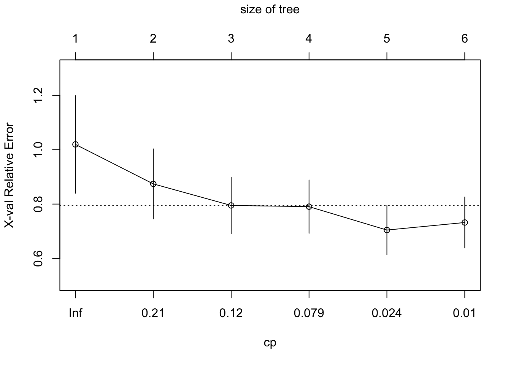
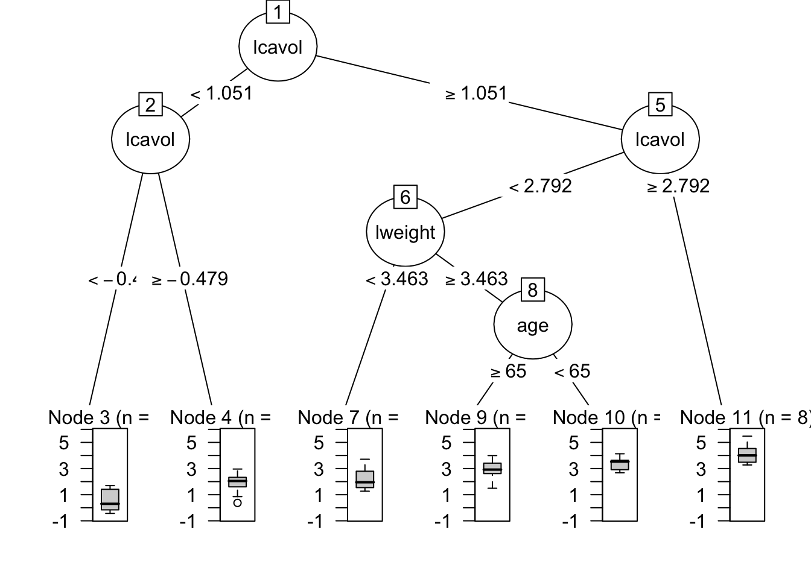
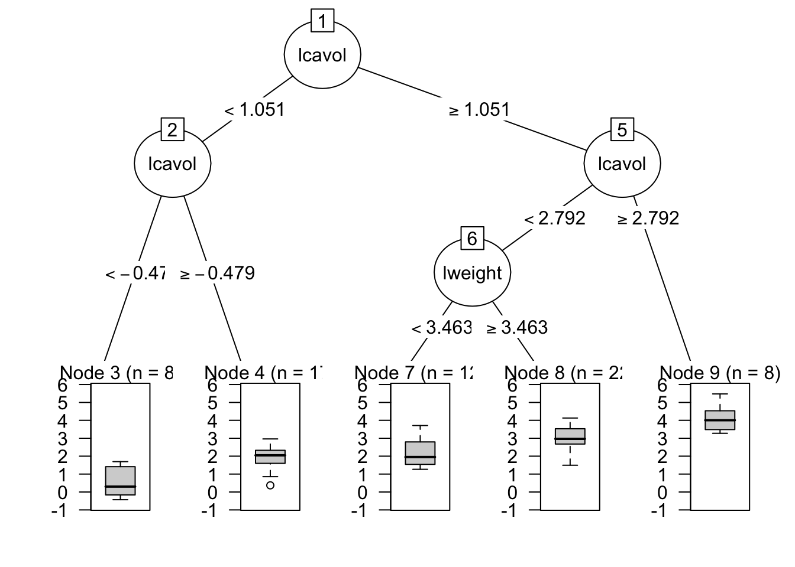
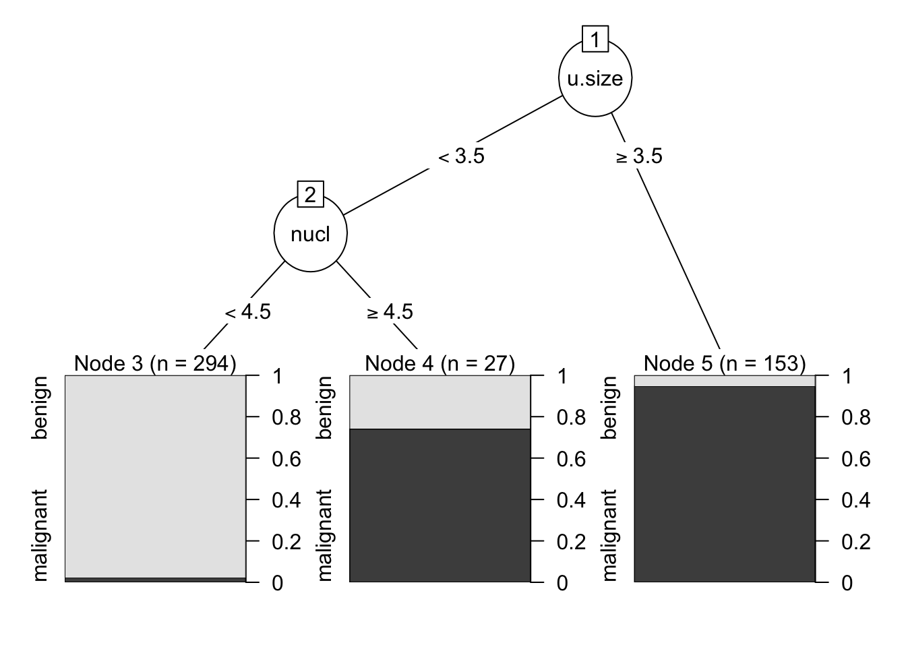
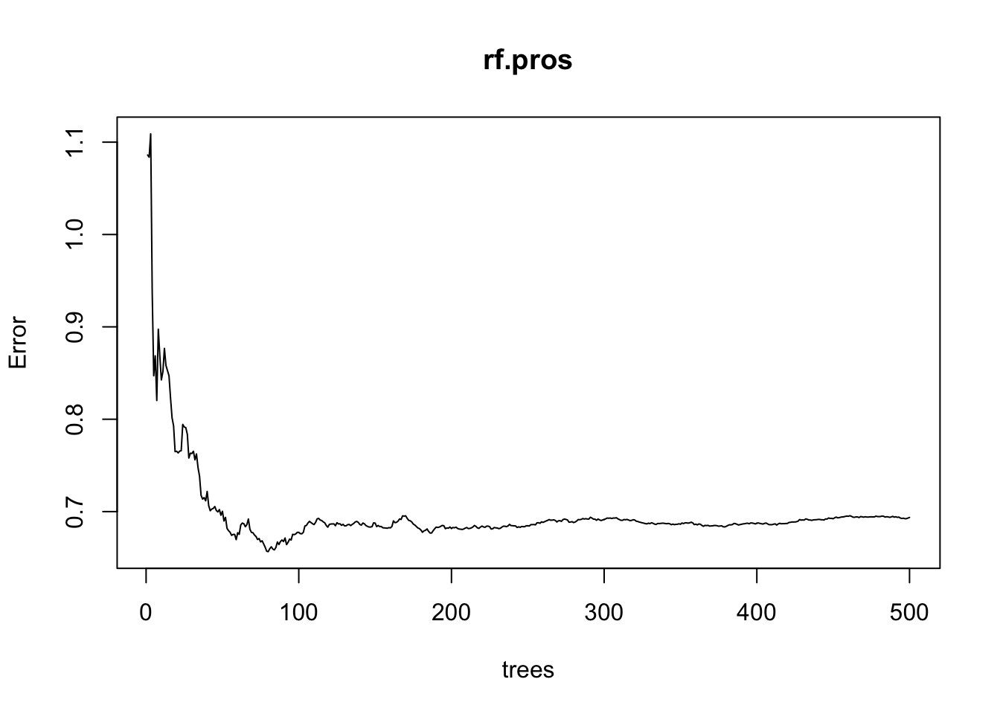
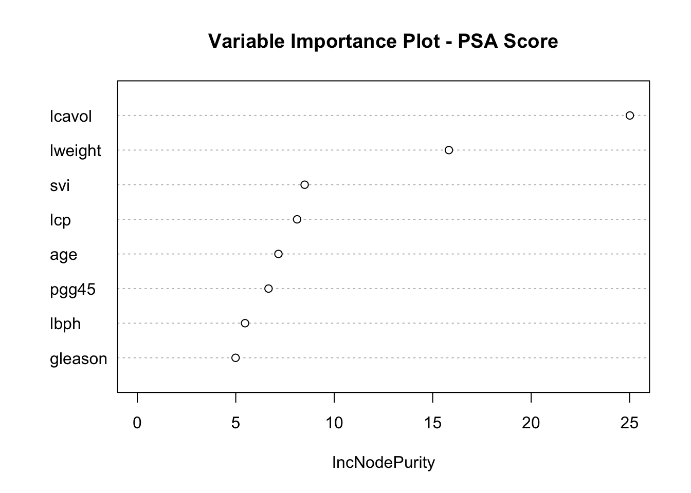
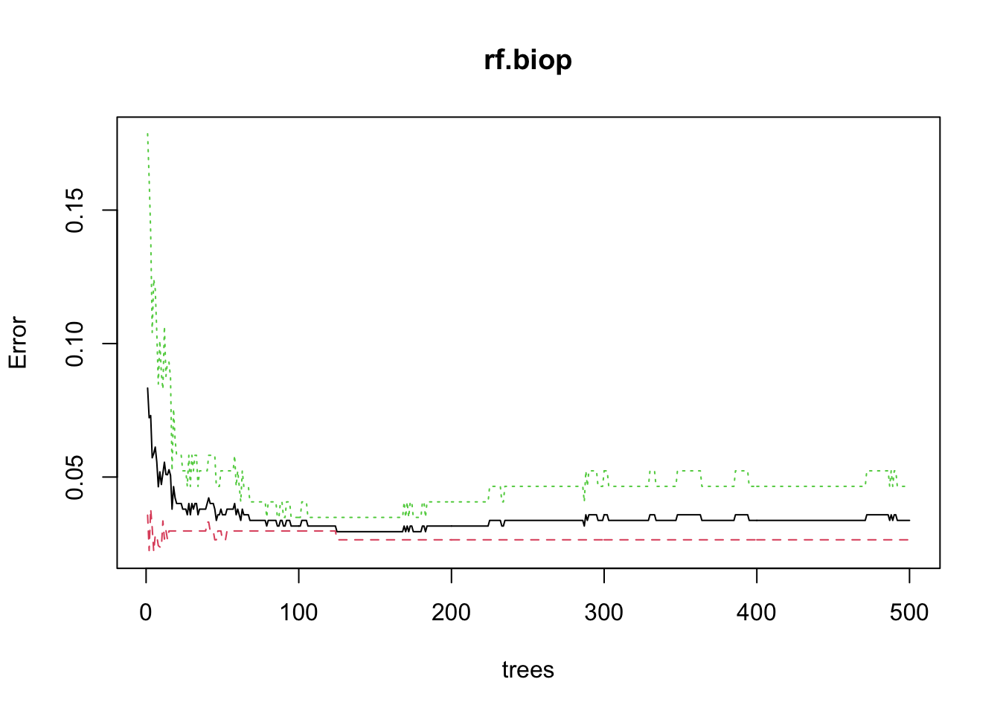
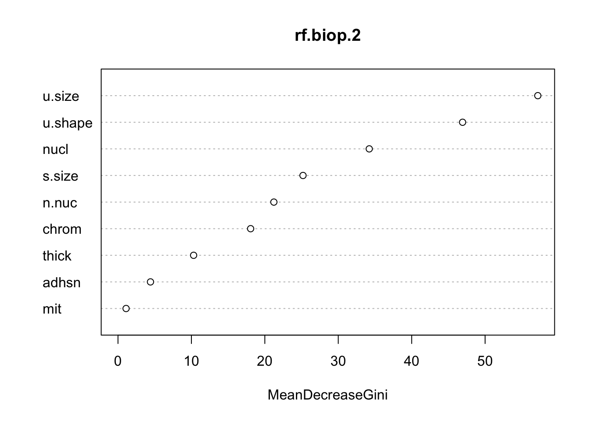
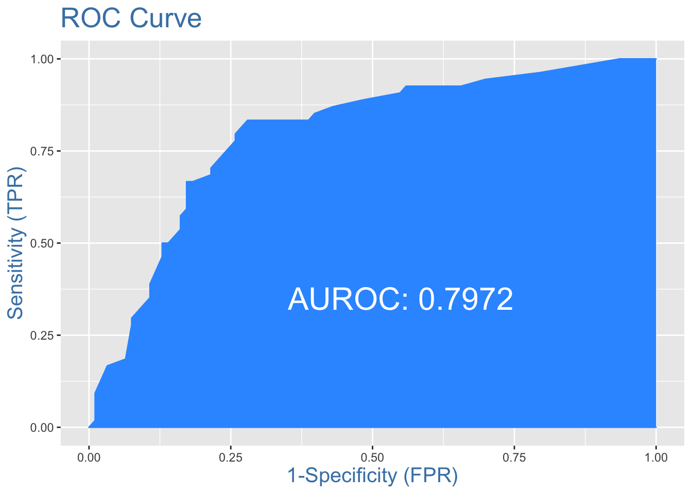

Machine Learning
05 May, 2021
Intro
Placeholder
Sub analysis
Yet another analysis
1 Bayesian Theory
2
3 ^_^ Space
4 ^_^ Space
5 ^_^ Space
6 Regularization: Penalized Regression
Placeholder
6.1 Ridge Regression
6.2 数据准备
6.3 模型构建与模型评价
6.3.1 最优子集
6.3.2 岭回归
6.3.3 Lasso
6.3.4 弹性网络
6.3.5 使用glmnet进行交叉验证
6.3.6 模型选择
7 ^_^ Space
8 Classification Analysis
9 Random Forest
准备数据：前列腺癌数据集。使用ifelse()函数将gleason评分编码为指标变量，划分训练数据集和测试数据集，训练数据集为pros.train，测试数据集为pros.test
## Load dataset
prostate <- read.delim("/Users/zehuibai/Documents/GitHub/Machine-Learning-ZBA/data/prostate.txt", header=T)
prostate$gleason <- ifelse(prostate$gleason == 6, 0, 1)
pros.train <- subset(prostate, train == TRUE)[, 2:10]
pros.test = subset(prostate, train == FALSE)[, 2:10]9.1 回归树
## 在训练数据集上建立回归树，使用party包中的rpart()函数
set.seed(123)
tree.pros <- rpart(lpsa ~ ., data = pros.train)
tree.pros$cptable ## 检查每次分裂的误差，以决定最优的树分裂次数## CP nsplit rel error xerror xstd
## 1 0.35852251 0 1.0000000 1.0195606 0.17963802
## 2 0.12295687 1 0.6414775 0.8742500 0.12878275
## 3 0.11639953 2 0.5185206 0.7949473 0.10419946
## 4 0.05350873 3 0.4021211 0.7904898 0.09821670
## 5 0.01032838 4 0.3486124 0.7044000 0.09115510
## 6 0.01000000 5 0.3382840 0.7321671 0.09381916 ## CP的第一列是成本复杂性参数
## 第二列nsplit是树 分裂的次数，
## rel error列表示相对误差，即某次分裂的RSS除以不分裂的RSS(RSS(k)/RSS(0))
## xerror和xstd都是基于10折交叉验证的
## xerror是平均误差，xstd是交叉验证过程的标准差
## 可以 看出，5次分裂在整个数据集上产生的误差最小，但使用交叉验证时，4次分裂产生的误差略微更 小。
## 可以使用plotcp()函数查看统计图,使用误差条表示树的规模和相对误差之间的关系，误差条和树规模是对应的
plotcp(tree.pros)
## 树的xerror可以通过剪枝达到最 小化。
## 剪枝的方法是先建立一个cp对象，将这个对象和表中第5行相关联，然后使用prune()函 数完成剩下的工作
cp <- min(tree.pros$cptable[5, ])
prune.tree.pros <- prune(tree.pros, cp = cp)
## 可以用统计图比较完整树和剪枝树。
## 由partykit包生成的树图明显优于party包生成的，在plot()函数中，可使用as.party()函数作为包装器函数, 它们显示了树的分裂、节点、每节点观测数，以及预测结果的箱线图
plot(as.party(tree.pros))

## 除了最后一次分裂(完整树包含变量age)，两个树是完全一样的
## Predict
## 剪枝树在测试集上表现如何。在测试数据上使用predict()函数进行预测，并建立一个对象保存这些预测值。然后用预测值减去实际值，得到误差，最后算出误差平方的平均值
party.pros.test <- predict(prune.tree.pros,
newdata = pros.test)
rpart.resid <- party.pros.test - pros.test$lpsa ## calculate residual
mean(rpart.resid^2)## [1] 0.52677489.2 分类树
## CART breast cancer 乳腺癌数据
## 删除患者ID，对特征进行重新命名，删除一些缺失值，然后建立训练数据集和测试数据集
data(biopsy)
biopsy <- biopsy[, -1]
names(biopsy) <- c("thick", "u.size", "u.shape", "adhsn", "s.size", "nucl", "chrom", "n.nuc", "mit", "class")
biopsy.v2 <- na.omit(biopsy)
set.seed(123) # random number generator
ind <- sample(2, nrow(biopsy.v2), replace = TRUE, prob = c(0.7, 0.3))
biop.train <- biopsy.v2[ind == 1, ] # the training data set
biop.test <- biopsy.v2[ind == 2, ] # the test data set
str(biop.test) # 建立分类树之前，要确保结果变量是一个因子## 'data.frame': 209 obs. of 10 variables:
## $ thick : int 5 6 4 2 1 7 6 7 1 3 ...
## $ u.size : int 4 8 1 1 1 4 1 3 1 2 ...
## $ u.shape: int 4 8 1 2 1 6 1 2 1 1 ...
## $ adhsn : int 5 1 3 1 1 4 1 10 1 1 ...
## $ s.size : int 7 3 2 2 1 6 2 5 2 1 ...
## $ nucl : int 10 4 1 1 1 1 1 10 1 1 ...
## $ chrom : int 3 3 3 3 3 4 3 5 3 2 ...
## $ n.nuc : int 2 7 1 1 1 3 1 4 1 1 ...
## $ mit : int 1 1 1 1 1 1 1 4 1 1 ...
## $ class : Factor w/ 2 levels "benign","malignant": 1 1 1 1 1 2 1 2 1 1 ...
## - attr(*, "na.action")= 'omit' Named int [1:16] 24 41 140 146 159 165 236 250 276 293 ...
## ..- attr(*, "names")= chr [1:16] "24" "41" "140" "146" ...## 生成树，然后检查输出中的表格，找到最优分裂次数
set.seed(123)
tree.biop <- rpart(class ~ ., data = biop.train)
tree.biop$cptable## CP nsplit rel error xerror xstd
## 1 0.79651163 0 1.0000000 1.0000000 0.06086254
## 2 0.07558140 1 0.2034884 0.2616279 0.03710371
## 3 0.01162791 2 0.1279070 0.1511628 0.02882093
## 4 0.01000000 3 0.1162791 0.1511628 0.02882093## 交叉验证误差仅在两次分裂后就达到了最小值(第3行)。现在可以对树进行剪枝，再在图中绘制剪枝树
cp <- min(tree.biop$cptable[3, ])
prune.tree.biop = prune(tree.biop, cp <- cp)
## plot(as.party(tree.biop))
plot(as.party(prune.tree.biop))
## 在测试集上的表现
rparty.test <- predict(prune.tree.biop, newdata = biop.test,
type = "class")
table(rparty.test, biop.test$class)##
## rparty.test benign malignant
## benign 136 3
## malignant 6 64## [1] 0.95693789.3 随机森林回归
建立一个随机森林对象的通用语法是使用 randomForest()函数，指定模型公式和数据集这两个基本参数。回想一下每次树迭代默认的变 量抽样数，对于回归问题，是p/3;对于分类问题，是p的平方根，p为数据集中预测变量的个数。 对于大规模数据集，就p而言，你可以调整mtry参数，它可以确定每次迭代的变量抽样数值。如 果p小于10，可以省略上面的调整过程。想在多特征数据集中优化mtry参数时，可以使用caret包， 或使用randomForest包中的tuneRF()函数。
set.seed(123)
rf.pros <- randomForest(lpsa ~ ., data = pros.train)
rf.pros ## 生成了500个不同的树(默认设置)，并且在每次树分裂时随机抽出两个变量。##
## Call:
## randomForest(formula = lpsa ~ ., data = pros.train)
## Type of random forest: regression
## Number of trees: 500
## No. of variables tried at each split: 2
##
## Mean of squared residuals: 0.6936697
## % Var explained: 51.73 ## 结果的MSE为0.68，差不多53%的方差得到了解释
## 改善。过多的树会导致过拟合,“多大的数量是‘过多’”依赖于数据规模。
## 第一是做出rf.pros的统计图，另一件是求出最小的MSE
## 图表示MSE与模型中树的数量之间的关系。可以看出，树的数量增加时，一开始MSE会有显著改善，当森林中大约建立了100棵树之后，改善几乎停滞
plot(rf.pros)
## [1] 80 ## 指定ntree =
set.seed(123)
rf.pros.2 <- randomForest(lpsa ~ ., data = pros.train, ntree = which.min(rf.pros$mse))
rf.pros.2##
## Call:
## randomForest(formula = lpsa ~ ., data = pros.train, ntree = which.min(rf.pros$mse))
## Type of random forest: regression
## Number of trees: 80
## No. of variables tried at each split: 2
##
## Mean of squared residuals: 0.6566502
## % Var explained: 54.31## 对模型进行检验之前，先看看另一张统计图。如果使用自助抽样和两个随机预测变量建立了80棵不同的树，要想将树的结果组合起来，需 要一种方法确定哪些变量驱动着结果。
## 做出变量重要性统计图及相应的列表。 Y轴是按重要性降序排列的变量列表，X轴是MSE改善百分比。
## 在分类问题中，X轴应 该是基尼指数的改善
varImpPlot(rf.pros.2, scale = TRUE,
main = "Variable Importance Plot - PSA Score")
## IncNodePurity
## lcavol 25.011557
## lweight 15.822110
## age 7.167320
## lbph 5.471032
## svi 8.497838
## lcp 8.113947
## gleason 4.990213
## pgg45 6.663911## 看看模型在测试数据上的表现:
rf.pros.test <- predict(rf.pros.2, newdata = pros.test)
## plot(rf.pros.test, pros.test$lpsa)
rf.resid <- rf.pros.test - pros.test$lpsa
## calculate residual
mean(rf.resid^2)## [1] 0.55125499.4 随机森林分类
9.4.1 乳腺癌数据集
## 乳腺癌诊断数据
set.seed(123)
rf.biop <- randomForest(class ~ ., data = biop.train)
rf.biop ## OOB(袋外数据)误差率##
## Call:
## randomForest(formula = class ~ ., data = biop.train)
## Type of random forest: classification
## Number of trees: 500
## No. of variables tried at each split: 3
##
## OOB estimate of error rate: 3.38%
## Confusion matrix:
## benign malignant class.error
## benign 294 8 0.02649007
## malignant 8 164 0.04651163
## [1] 125## 使模型正确率达到最优
set.seed(123)
rf.biop.2 <- randomForest(class ~ ., data = biop.train, ntree = 125)
rf.biop.2##
## Call:
## randomForest(formula = class ~ ., data = biop.train, ntree = 125)
## Type of random forest: classification
## Number of trees: 125
## No. of variables tried at each split: 3
##
## OOB estimate of error rate: 2.95%
## Confusion matrix:
## benign malignant class.error
## benign 294 8 0.02649007
## malignant 6 166 0.03488372## predict
rf.biop.test <- predict(rf.biop.2,
newdata = biop.test,
type = "response")
table(rf.biop.test, biop.test$class)##
## rf.biop.test benign malignant
## benign 138 0
## malignant 4 67## [1] 0.9808612
9.4.2 皮玛印第安人糖尿病数据集
## 皮玛印第安人糖尿病模型:数据准备
data(Pima.tr)
data(Pima.te)
pima <- rbind(Pima.tr, Pima.te)
set.seed(502)
ind <- sample(2, nrow(pima), replace = TRUE, prob = c(0.7, 0.3))
pima.train <- pima[ind == 1, ]
pima.test <- pima[ind == 2, ]
## 建立模型
set.seed(321)
rf.pima <- randomForest(type ~ ., data = pima.train)
rf.pima##
## Call:
## randomForest(formula = type ~ ., data = pima.train)
## Type of random forest: classification
## Number of trees: 500
## No. of variables tried at each split: 2
##
## OOB estimate of error rate: 20.26%
## Confusion matrix:
## No Yes class.error
## No 235 27 0.1030534
## Yes 51 72 0.4146341## [1] 88set.seed(321)
rf.pima.2 <- randomForest(type ~ ., data = pima.train, ntree = which.min(rf.pima$err.rate[,1]))
rf.pima.2 ## OOB误差有些许改善##
## Call:
## randomForest(formula = type ~ ., data = pima.train, ntree = which.min(rf.pima$err.rate[, 1]))
## Type of random forest: classification
## Number of trees: 88
## No. of variables tried at each split: 2
##
## OOB estimate of error rate: 19.74%
## Confusion matrix:
## No Yes class.error
## No 236 26 0.09923664
## Yes 50 73 0.40650407rf.pima.test <- predict(rf.pima.2,
newdata = pima.test,
type = "response")
table(rf.pima.test, pima.test$type)##
## rf.pima.test No Yes
## No 74 17
## Yes 19 37## [1] 0.73469399.5 极限梯度提升——分类
xgboost package
nrounds:最大迭代次数(最终模型中树的数量)。
colsample_bytree:建立树时随机抽取的特征数量，用一个比率表示，默认值为1(使用100%的特征)。
min_child_weight:对树进行提升时使用的最小权重，默认为1。
eta:学习率，每棵树在最终解中的贡献，默认为0.3。
gamma:在树中新增一个叶子分区时所需的最小减损。
subsample:子样本数据占整个观测的比例，默认值为1(100%)。 max_depth:单个树的最大深度。使用expand.grid()函数可以建立实验网格，以运行caret包的训练过程。 对于前面列出的参数，如果没有设定具体值，那么即使有默认值，运行函数时也 会收到出错信息。下面的参数取值是基于以前的一些训练迭代而设定的。可以根据实验参数调整过程。
## 建立一个具有24个模型的网格，caret包会运行这些模型，以确定最好的调优参数。
grid = expand.grid(
nrounds = c(75, 100),
colsample_bytree = 1,
min_child_weight = 1,
eta = c(0.01, 0.1, 0.3), #0.3 is default,
gamma = c(0.5, 0.25),
subsample = 0.5,
max_depth = c(2, 3)
)
head(grid)## nrounds colsample_bytree min_child_weight eta gamma subsample max_depth
## 1 75 1 1 0.01 0.5 0.5 2
## 2 100 1 1 0.01 0.5 0.5 2
## 3 75 1 1 0.10 0.5 0.5 2
## 4 100 1 1 0.10 0.5 0.5 2
## 5 75 1 1 0.30 0.5 0.5 2
## 6 100 1 1 0.30 0.5 0.5 2## 使用car包的train()函数之前，创建一个名为cntrl的对象，来设定trainControl的参数。这个对象会保存要使用的方法，以训练调优参数。我们使用5折交叉验证
## 在trControl中设定了verboseIter为TURE，所以可以看到每折交叉验证中的每次训练迭代。
cntrl = trainControl(
method = "cv",
number = 5,
verboseIter = TRUE,
returnData = FALSE,
returnResamp = "final"
)
## 设定好所需参数即可:训练数据集、 标号、训练控制对象和实验网格。设定随机数种子
set.seed(1)
train.xgb = train(
x = pima.train[, 1:7],
y = ,pima.train[, 8],
trControl = cntrl,
tuneGrid = grid,
method = "xgbTree"
)## + Fold1: eta=0.01, max_depth=2, gamma=0.25, colsample_bytree=1, min_child_weight=1, subsample=0.5, nrounds=100
## - Fold1: eta=0.01, max_depth=2, gamma=0.25, colsample_bytree=1, min_child_weight=1, subsample=0.5, nrounds=100
## + Fold1: eta=0.01, max_depth=2, gamma=0.50, colsample_bytree=1, min_child_weight=1, subsample=0.5, nrounds=100
## - Fold1: eta=0.01, max_depth=2, gamma=0.50, colsample_bytree=1, min_child_weight=1, subsample=0.5, nrounds=100
## + Fold1: eta=0.01, max_depth=3, gamma=0.25, colsample_bytree=1, min_child_weight=1, subsample=0.5, nrounds=100
## - Fold1: eta=0.01, max_depth=3, gamma=0.25, colsample_bytree=1, min_child_weight=1, subsample=0.5, nrounds=100
## + Fold1: eta=0.01, max_depth=3, gamma=0.50, colsample_bytree=1, min_child_weight=1, subsample=0.5, nrounds=100
## - Fold1: eta=0.01, max_depth=3, gamma=0.50, colsample_bytree=1, min_child_weight=1, subsample=0.5, nrounds=100
## + Fold1: eta=0.10, max_depth=2, gamma=0.25, colsample_bytree=1, min_child_weight=1, subsample=0.5, nrounds=100
## - Fold1: eta=0.10, max_depth=2, gamma=0.25, colsample_bytree=1, min_child_weight=1, subsample=0.5, nrounds=100
## + Fold1: eta=0.10, max_depth=2, gamma=0.50, colsample_bytree=1, min_child_weight=1, subsample=0.5, nrounds=100
## - Fold1: eta=0.10, max_depth=2, gamma=0.50, colsample_bytree=1, min_child_weight=1, subsample=0.5, nrounds=100
## + Fold1: eta=0.10, max_depth=3, gamma=0.25, colsample_bytree=1, min_child_weight=1, subsample=0.5, nrounds=100
## - Fold1: eta=0.10, max_depth=3, gamma=0.25, colsample_bytree=1, min_child_weight=1, subsample=0.5, nrounds=100
## + Fold1: eta=0.10, max_depth=3, gamma=0.50, colsample_bytree=1, min_child_weight=1, subsample=0.5, nrounds=100
## - Fold1: eta=0.10, max_depth=3, gamma=0.50, colsample_bytree=1, min_child_weight=1, subsample=0.5, nrounds=100
## + Fold1: eta=0.30, max_depth=2, gamma=0.25, colsample_bytree=1, min_child_weight=1, subsample=0.5, nrounds=100
## - Fold1: eta=0.30, max_depth=2, gamma=0.25, colsample_bytree=1, min_child_weight=1, subsample=0.5, nrounds=100
## + Fold1: eta=0.30, max_depth=2, gamma=0.50, colsample_bytree=1, min_child_weight=1, subsample=0.5, nrounds=100
## - Fold1: eta=0.30, max_depth=2, gamma=0.50, colsample_bytree=1, min_child_weight=1, subsample=0.5, nrounds=100
## + Fold1: eta=0.30, max_depth=3, gamma=0.25, colsample_bytree=1, min_child_weight=1, subsample=0.5, nrounds=100
## - Fold1: eta=0.30, max_depth=3, gamma=0.25, colsample_bytree=1, min_child_weight=1, subsample=0.5, nrounds=100
## + Fold1: eta=0.30, max_depth=3, gamma=0.50, colsample_bytree=1, min_child_weight=1, subsample=0.5, nrounds=100
## - Fold1: eta=0.30, max_depth=3, gamma=0.50, colsample_bytree=1, min_child_weight=1, subsample=0.5, nrounds=100
## + Fold2: eta=0.01, max_depth=2, gamma=0.25, colsample_bytree=1, min_child_weight=1, subsample=0.5, nrounds=100
## - Fold2: eta=0.01, max_depth=2, gamma=0.25, colsample_bytree=1, min_child_weight=1, subsample=0.5, nrounds=100
## + Fold2: eta=0.01, max_depth=2, gamma=0.50, colsample_bytree=1, min_child_weight=1, subsample=0.5, nrounds=100
## - Fold2: eta=0.01, max_depth=2, gamma=0.50, colsample_bytree=1, min_child_weight=1, subsample=0.5, nrounds=100
## + Fold2: eta=0.01, max_depth=3, gamma=0.25, colsample_bytree=1, min_child_weight=1, subsample=0.5, nrounds=100
## - Fold2: eta=0.01, max_depth=3, gamma=0.25, colsample_bytree=1, min_child_weight=1, subsample=0.5, nrounds=100
## + Fold2: eta=0.01, max_depth=3, gamma=0.50, colsample_bytree=1, min_child_weight=1, subsample=0.5, nrounds=100
## - Fold2: eta=0.01, max_depth=3, gamma=0.50, colsample_bytree=1, min_child_weight=1, subsample=0.5, nrounds=100
## + Fold2: eta=0.10, max_depth=2, gamma=0.25, colsample_bytree=1, min_child_weight=1, subsample=0.5, nrounds=100
## - Fold2: eta=0.10, max_depth=2, gamma=0.25, colsample_bytree=1, min_child_weight=1, subsample=0.5, nrounds=100
## + Fold2: eta=0.10, max_depth=2, gamma=0.50, colsample_bytree=1, min_child_weight=1, subsample=0.5, nrounds=100
## - Fold2: eta=0.10, max_depth=2, gamma=0.50, colsample_bytree=1, min_child_weight=1, subsample=0.5, nrounds=100
## + Fold2: eta=0.10, max_depth=3, gamma=0.25, colsample_bytree=1, min_child_weight=1, subsample=0.5, nrounds=100
## - Fold2: eta=0.10, max_depth=3, gamma=0.25, colsample_bytree=1, min_child_weight=1, subsample=0.5, nrounds=100
## + Fold2: eta=0.10, max_depth=3, gamma=0.50, colsample_bytree=1, min_child_weight=1, subsample=0.5, nrounds=100
## - Fold2: eta=0.10, max_depth=3, gamma=0.50, colsample_bytree=1, min_child_weight=1, subsample=0.5, nrounds=100
## + Fold2: eta=0.30, max_depth=2, gamma=0.25, colsample_bytree=1, min_child_weight=1, subsample=0.5, nrounds=100
## - Fold2: eta=0.30, max_depth=2, gamma=0.25, colsample_bytree=1, min_child_weight=1, subsample=0.5, nrounds=100
## + Fold2: eta=0.30, max_depth=2, gamma=0.50, colsample_bytree=1, min_child_weight=1, subsample=0.5, nrounds=100
## - Fold2: eta=0.30, max_depth=2, gamma=0.50, colsample_bytree=1, min_child_weight=1, subsample=0.5, nrounds=100
## + Fold2: eta=0.30, max_depth=3, gamma=0.25, colsample_bytree=1, min_child_weight=1, subsample=0.5, nrounds=100
## - Fold2: eta=0.30, max_depth=3, gamma=0.25, colsample_bytree=1, min_child_weight=1, subsample=0.5, nrounds=100
## + Fold2: eta=0.30, max_depth=3, gamma=0.50, colsample_bytree=1, min_child_weight=1, subsample=0.5, nrounds=100
## - Fold2: eta=0.30, max_depth=3, gamma=0.50, colsample_bytree=1, min_child_weight=1, subsample=0.5, nrounds=100
## + Fold3: eta=0.01, max_depth=2, gamma=0.25, colsample_bytree=1, min_child_weight=1, subsample=0.5, nrounds=100
## - Fold3: eta=0.01, max_depth=2, gamma=0.25, colsample_bytree=1, min_child_weight=1, subsample=0.5, nrounds=100
## + Fold3: eta=0.01, max_depth=2, gamma=0.50, colsample_bytree=1, min_child_weight=1, subsample=0.5, nrounds=100
## - Fold3: eta=0.01, max_depth=2, gamma=0.50, colsample_bytree=1, min_child_weight=1, subsample=0.5, nrounds=100
## + Fold3: eta=0.01, max_depth=3, gamma=0.25, colsample_bytree=1, min_child_weight=1, subsample=0.5, nrounds=100
## - Fold3: eta=0.01, max_depth=3, gamma=0.25, colsample_bytree=1, min_child_weight=1, subsample=0.5, nrounds=100
## + Fold3: eta=0.01, max_depth=3, gamma=0.50, colsample_bytree=1, min_child_weight=1, subsample=0.5, nrounds=100
## - Fold3: eta=0.01, max_depth=3, gamma=0.50, colsample_bytree=1, min_child_weight=1, subsample=0.5, nrounds=100
## + Fold3: eta=0.10, max_depth=2, gamma=0.25, colsample_bytree=1, min_child_weight=1, subsample=0.5, nrounds=100
## - Fold3: eta=0.10, max_depth=2, gamma=0.25, colsample_bytree=1, min_child_weight=1, subsample=0.5, nrounds=100
## + Fold3: eta=0.10, max_depth=2, gamma=0.50, colsample_bytree=1, min_child_weight=1, subsample=0.5, nrounds=100
## - Fold3: eta=0.10, max_depth=2, gamma=0.50, colsample_bytree=1, min_child_weight=1, subsample=0.5, nrounds=100
## + Fold3: eta=0.10, max_depth=3, gamma=0.25, colsample_bytree=1, min_child_weight=1, subsample=0.5, nrounds=100
## - Fold3: eta=0.10, max_depth=3, gamma=0.25, colsample_bytree=1, min_child_weight=1, subsample=0.5, nrounds=100
## + Fold3: eta=0.10, max_depth=3, gamma=0.50, colsample_bytree=1, min_child_weight=1, subsample=0.5, nrounds=100
## - Fold3: eta=0.10, max_depth=3, gamma=0.50, colsample_bytree=1, min_child_weight=1, subsample=0.5, nrounds=100
## + Fold3: eta=0.30, max_depth=2, gamma=0.25, colsample_bytree=1, min_child_weight=1, subsample=0.5, nrounds=100
## - Fold3: eta=0.30, max_depth=2, gamma=0.25, colsample_bytree=1, min_child_weight=1, subsample=0.5, nrounds=100
## + Fold3: eta=0.30, max_depth=2, gamma=0.50, colsample_bytree=1, min_child_weight=1, subsample=0.5, nrounds=100
## - Fold3: eta=0.30, max_depth=2, gamma=0.50, colsample_bytree=1, min_child_weight=1, subsample=0.5, nrounds=100
## + Fold3: eta=0.30, max_depth=3, gamma=0.25, colsample_bytree=1, min_child_weight=1, subsample=0.5, nrounds=100
## - Fold3: eta=0.30, max_depth=3, gamma=0.25, colsample_bytree=1, min_child_weight=1, subsample=0.5, nrounds=100
## + Fold3: eta=0.30, max_depth=3, gamma=0.50, colsample_bytree=1, min_child_weight=1, subsample=0.5, nrounds=100
## - Fold3: eta=0.30, max_depth=3, gamma=0.50, colsample_bytree=1, min_child_weight=1, subsample=0.5, nrounds=100
## + Fold4: eta=0.01, max_depth=2, gamma=0.25, colsample_bytree=1, min_child_weight=1, subsample=0.5, nrounds=100
## - Fold4: eta=0.01, max_depth=2, gamma=0.25, colsample_bytree=1, min_child_weight=1, subsample=0.5, nrounds=100
## + Fold4: eta=0.01, max_depth=2, gamma=0.50, colsample_bytree=1, min_child_weight=1, subsample=0.5, nrounds=100
## - Fold4: eta=0.01, max_depth=2, gamma=0.50, colsample_bytree=1, min_child_weight=1, subsample=0.5, nrounds=100
## + Fold4: eta=0.01, max_depth=3, gamma=0.25, colsample_bytree=1, min_child_weight=1, subsample=0.5, nrounds=100
## - Fold4: eta=0.01, max_depth=3, gamma=0.25, colsample_bytree=1, min_child_weight=1, subsample=0.5, nrounds=100
## + Fold4: eta=0.01, max_depth=3, gamma=0.50, colsample_bytree=1, min_child_weight=1, subsample=0.5, nrounds=100
## - Fold4: eta=0.01, max_depth=3, gamma=0.50, colsample_bytree=1, min_child_weight=1, subsample=0.5, nrounds=100
## + Fold4: eta=0.10, max_depth=2, gamma=0.25, colsample_bytree=1, min_child_weight=1, subsample=0.5, nrounds=100
## - Fold4: eta=0.10, max_depth=2, gamma=0.25, colsample_bytree=1, min_child_weight=1, subsample=0.5, nrounds=100
## + Fold4: eta=0.10, max_depth=2, gamma=0.50, colsample_bytree=1, min_child_weight=1, subsample=0.5, nrounds=100
## - Fold4: eta=0.10, max_depth=2, gamma=0.50, colsample_bytree=1, min_child_weight=1, subsample=0.5, nrounds=100
## + Fold4: eta=0.10, max_depth=3, gamma=0.25, colsample_bytree=1, min_child_weight=1, subsample=0.5, nrounds=100
## - Fold4: eta=0.10, max_depth=3, gamma=0.25, colsample_bytree=1, min_child_weight=1, subsample=0.5, nrounds=100
## + Fold4: eta=0.10, max_depth=3, gamma=0.50, colsample_bytree=1, min_child_weight=1, subsample=0.5, nrounds=100
## - Fold4: eta=0.10, max_depth=3, gamma=0.50, colsample_bytree=1, min_child_weight=1, subsample=0.5, nrounds=100
## + Fold4: eta=0.30, max_depth=2, gamma=0.25, colsample_bytree=1, min_child_weight=1, subsample=0.5, nrounds=100
## - Fold4: eta=0.30, max_depth=2, gamma=0.25, colsample_bytree=1, min_child_weight=1, subsample=0.5, nrounds=100
## + Fold4: eta=0.30, max_depth=2, gamma=0.50, colsample_bytree=1, min_child_weight=1, subsample=0.5, nrounds=100
## - Fold4: eta=0.30, max_depth=2, gamma=0.50, colsample_bytree=1, min_child_weight=1, subsample=0.5, nrounds=100
## + Fold4: eta=0.30, max_depth=3, gamma=0.25, colsample_bytree=1, min_child_weight=1, subsample=0.5, nrounds=100
## - Fold4: eta=0.30, max_depth=3, gamma=0.25, colsample_bytree=1, min_child_weight=1, subsample=0.5, nrounds=100
## + Fold4: eta=0.30, max_depth=3, gamma=0.50, colsample_bytree=1, min_child_weight=1, subsample=0.5, nrounds=100
## - Fold4: eta=0.30, max_depth=3, gamma=0.50, colsample_bytree=1, min_child_weight=1, subsample=0.5, nrounds=100
## + Fold5: eta=0.01, max_depth=2, gamma=0.25, colsample_bytree=1, min_child_weight=1, subsample=0.5, nrounds=100
## - Fold5: eta=0.01, max_depth=2, gamma=0.25, colsample_bytree=1, min_child_weight=1, subsample=0.5, nrounds=100
## + Fold5: eta=0.01, max_depth=2, gamma=0.50, colsample_bytree=1, min_child_weight=1, subsample=0.5, nrounds=100
## - Fold5: eta=0.01, max_depth=2, gamma=0.50, colsample_bytree=1, min_child_weight=1, subsample=0.5, nrounds=100
## + Fold5: eta=0.01, max_depth=3, gamma=0.25, colsample_bytree=1, min_child_weight=1, subsample=0.5, nrounds=100
## - Fold5: eta=0.01, max_depth=3, gamma=0.25, colsample_bytree=1, min_child_weight=1, subsample=0.5, nrounds=100
## + Fold5: eta=0.01, max_depth=3, gamma=0.50, colsample_bytree=1, min_child_weight=1, subsample=0.5, nrounds=100
## - Fold5: eta=0.01, max_depth=3, gamma=0.50, colsample_bytree=1, min_child_weight=1, subsample=0.5, nrounds=100
## + Fold5: eta=0.10, max_depth=2, gamma=0.25, colsample_bytree=1, min_child_weight=1, subsample=0.5, nrounds=100
## - Fold5: eta=0.10, max_depth=2, gamma=0.25, colsample_bytree=1, min_child_weight=1, subsample=0.5, nrounds=100
## + Fold5: eta=0.10, max_depth=2, gamma=0.50, colsample_bytree=1, min_child_weight=1, subsample=0.5, nrounds=100
## - Fold5: eta=0.10, max_depth=2, gamma=0.50, colsample_bytree=1, min_child_weight=1, subsample=0.5, nrounds=100
## + Fold5: eta=0.10, max_depth=3, gamma=0.25, colsample_bytree=1, min_child_weight=1, subsample=0.5, nrounds=100
## - Fold5: eta=0.10, max_depth=3, gamma=0.25, colsample_bytree=1, min_child_weight=1, subsample=0.5, nrounds=100
## + Fold5: eta=0.10, max_depth=3, gamma=0.50, colsample_bytree=1, min_child_weight=1, subsample=0.5, nrounds=100
## - Fold5: eta=0.10, max_depth=3, gamma=0.50, colsample_bytree=1, min_child_weight=1, subsample=0.5, nrounds=100
## + Fold5: eta=0.30, max_depth=2, gamma=0.25, colsample_bytree=1, min_child_weight=1, subsample=0.5, nrounds=100
## - Fold5: eta=0.30, max_depth=2, gamma=0.25, colsample_bytree=1, min_child_weight=1, subsample=0.5, nrounds=100
## + Fold5: eta=0.30, max_depth=2, gamma=0.50, colsample_bytree=1, min_child_weight=1, subsample=0.5, nrounds=100
## - Fold5: eta=0.30, max_depth=2, gamma=0.50, colsample_bytree=1, min_child_weight=1, subsample=0.5, nrounds=100
## + Fold5: eta=0.30, max_depth=3, gamma=0.25, colsample_bytree=1, min_child_weight=1, subsample=0.5, nrounds=100
## - Fold5: eta=0.30, max_depth=3, gamma=0.25, colsample_bytree=1, min_child_weight=1, subsample=0.5, nrounds=100
## + Fold5: eta=0.30, max_depth=3, gamma=0.50, colsample_bytree=1, min_child_weight=1, subsample=0.5, nrounds=100
## - Fold5: eta=0.30, max_depth=3, gamma=0.50, colsample_bytree=1, min_child_weight=1, subsample=0.5, nrounds=100
## Aggregating results
## Selecting tuning parameters
## Fitting nrounds = 100, max_depth = 2, eta = 0.01, gamma = 0.5, colsample_bytree = 1, min_child_weight = 1, subsample = 0.5 on full training set## eXtreme Gradient Boosting
##
## No pre-processing
## Resampling: Cross-Validated (5 fold)
## Summary of sample sizes: 308, 309, 308, 307, 308
## Resampling results across tuning parameters:
##
## eta max_depth gamma nrounds Accuracy Kappa
## 0.01 2 0.25 75 0.7865932 0.4700801
## 0.01 2 0.25 100 0.7971195 0.5003081
## 0.01 2 0.50 75 0.7971528 0.4945394
## 0.01 2 0.50 100 0.8101407 0.5317302
## 0.01 3 0.25 75 0.7971537 0.5018986
## 0.01 3 0.25 100 0.7893948 0.4854910
## 0.01 3 0.50 75 0.8050476 0.5221906
## 0.01 3 0.50 100 0.7997853 0.5136332
## 0.10 2 0.25 75 0.7896980 0.5002401
## 0.10 2 0.25 100 0.7921605 0.5073063
## 0.10 2 0.50 75 0.7947579 0.5167947
## 0.10 2 0.50 100 0.7791717 0.4828563
## 0.10 3 0.25 75 0.7948587 0.5114632
## 0.10 3 0.25 100 0.7896297 0.5011073
## 0.10 3 0.50 75 0.7845023 0.4923603
## 0.10 3 0.50 100 0.7766418 0.4779629
## 0.30 2 0.25 75 0.7557592 0.4362591
## 0.30 2 0.25 100 0.7609198 0.4504284
## 0.30 2 0.50 75 0.7635864 0.4475264
## 0.30 2 0.50 100 0.7740093 0.4729577
## 0.30 3 0.25 75 0.7636881 0.4478178
## 0.30 3 0.25 100 0.7637547 0.4534616
## 0.30 3 0.50 75 0.7583574 0.4403953
## 0.30 3 0.50 100 0.7427721 0.3975159
##
## Tuning parameter 'colsample_bytree' was held constant at a value of 1
##
## Tuning parameter 'min_child_weight' was held constant at a value of 1
##
## Tuning parameter 'subsample' was held constant at a value of 0.5
## Accuracy was used to select the optimal model using the largest value.
## The final values used for the model were nrounds = 100, max_depth = 2, eta
## = 0.01, gamma = 0.5, colsample_bytree = 1, min_child_weight = 1 and
## subsample = 0.5.接下来创建一个参数列表，供Xgboost包的训练函数xgb.train()使用。然后将数据框转换为一个输入特征矩阵，以及一个带标号的 数值型结果列表(其中的值是0和1)。接着，将特征矩阵和标号列表组合成符合要求的输入，即一个xgb.Dmatrix对象
param <- list( objective = "binary:logistic",
booster = "gbtree",
eval_metric = "error",
eta = 0.1,
max_depth = 2,
subsample = 0.5,
colsample_bytree = 1,
gamma = 0.5
)
x <- as.matrix(pima.train[, 1:7])
y <- ifelse(pima.train$type == "Yes", 1, 0)
train.mat <- xgb.DMatrix(data = x,
label = y)
## 创建模型
set.seed(1)
xgb.fit <- xgb.train(params = param, data = train.mat, nrounds = 75)
xgb.fit## ##### xgb.Booster
## raw: 58.1 Kb
## call:
## xgb.train(params = param, data = train.mat, nrounds = 75)
## params (as set within xgb.train):
## objective = "binary:logistic", booster = "gbtree", eval_metric = "error", eta = "0.1", max_depth = "2", subsample = "0.5", colsample_bytree = "1", gamma = "0.5", validate_parameters = "TRUE"
## xgb.attributes:
## niter
## callbacks:
## cb.print.evaluation(period = print_every_n)
## # of features: 7
## niter: 75
## nfeatures : 7## 查看模型效果之前，先检查变量重要性，并绘制统计图。你可以检查3个项目:gain、cover和frequecy。gain是这个特征对其所在分支的正确率做出的改善，cover是与这个特征相关的全体观测的相对数量，frequency是这个特征在所有树中出现的次数百分比
impMatrix <- xgb.importance(feature_names = dimnames(x)[[2]], model = xgb.fit)
impMatrix ## Feature Gain Cover Frequency
## 1: glu 0.40798619 0.29195097 0.23880597
## 2: bmi 0.15376461 0.20961316 0.20895522
## 3: age 0.14659442 0.14958220 0.14427861
## 4: ped 0.11929560 0.14591598 0.15422886
## 5: npreg 0.07242808 0.07594945 0.08457711
## 6: skin 0.06111382 0.07025684 0.10447761
## 7: bp 0.03881728 0.05673139 0.06467662
## 与训练集一样，测试集数据也要转换为矩阵
library(InformationValue)
pred <- predict(xgb.fit, x)
optimalCutoff(y, pred) ## 找出使误差最小化的最优概率阈## [1] 0.4416743pima.testMat <- as.matrix(pima.test[, 1:7])
xgb.pima.test <- predict(xgb.fit, pima.testMat)
y.test <- ifelse(pima.test$type == "Yes", 1, 0)
optimalCutoff(y.test, xgb.pima.test)## [1] 0.4837992## 0 1
## 0 71 14
## 1 22 40## [1] 0.7551
10 使用随机森林进行特征选择
Boruta包:[Kursa M., Rudnicki W. (2010), Feature Selection with the Boruta Package, Journal of Statistical Software, 36(11), 1 - 13]
1. 算法会复制所有输入特征，并对特征中的观测顺序进行重新组合，以去除 相关性，从而创建影子特征.
2. 然后使用所有输入特征建立一个随机森林模型，并计算每个特征(包 括影子特征)的正确率损失均值的Z分数
3. 如果某个特征的Z分数显著高于影子特征的Z分数，那么这个特征就被认为是重要的;反之，这个特征就被认为是不重要的
4. 然后，去除掉影子特征和那些已经确认了重要性的特征，重复上面的过程，直到所有特征都被赋予一个表示重要性的值
5. 算法结束之后，每个初始特征都会被标记为确认、待定或 拒绝
6. 对于待定的特征，必须自己确定是否要包括在下一次建模中。根据具体情况，可以有以下几种选择:
* 改变随机数种子，重复运行算法多次(k次)，然后只选择那些在k次运行中都标记为“确认”的属性
* 将你的训练数据分为k折，在每折数据上分别进行算法迭代，然后选择那些在所有k折数据上都标记为“确认”的属性
## prepare datasets
## 数据集中有208个观测，60个输入特征，以及1个用于分类的标号向量。标号是个因子，如果sonar对象是岩石，标号就是R;如果sonar对象是矿藏，标号则是M
data(Sonar, package="mlbench")
dim(Sonar)## [1] 208 61##
## M R
## 111 97## 在boruta()函数中创建一条模型公式。标号必须是因子类型，否则算法不会正常执行。如果想跟踪算法的进程，可以设定doTrace = 1。不要忘了设定随机数种子
class(Sonar$Class)## [1] "factor"library(Boruta)
set.seed(1)
feature.selection <- Boruta(Class ~ ., data = Sonar, doTrace = 1)
## 需要大量的计算能力
feature.selection$timeTaken## Time difference of 9.441353 secs##
## Tentative Confirmed Rejected
## 14 30 16## 以找出特征名称: 以找出特征名称
fNames <- getSelectedAttributes(feature.selection)
## 包括“确认”和“待定”的特征
fNames <- getSelectedAttributes(feature.selection, withTentative = TRUE)
fNames## [1] "V1" "V2" "V4" "V5" "V8" "V9" "V10" "V11" "V12" "V13" "V14" "V15"
## [13] "V16" "V17" "V18" "V19" "V20" "V21" "V22" "V23" "V26" "V27" "V28" "V29"
## [25] "V30" "V31" "V32" "V34" "V35" "V36" "V37" "V39" "V42" "V43" "V44" "V45"
## [37] "V46" "V47" "V48" "V49" "V51" "V52" "V54" "V59"## [1] 208 4411 Gradient Descent and Gradient Boosting
12 Cubist Model
Placeholder
12.1 Data Preparation
12.2 Fit Continious Outcome
12.2.1 Variable Importance
12.2.2 Summary display
12.2.3 specific parts
12.3 Ensembles By Committees
12.3.1 Nearest–neighbors Adjustmemt
12.4 Optimize parameters
12.5 Logistic CV
13 Support Vector Machine
Placeholder
13.1 Data Preparation
13.2 模型选择
13.3 特征选择
14 K-Nearest Neighbors
Placeholder
14.1 Data Preparation
14.2 加权最近邻法
15 Linear Discriminant Analysis
16 Multivariate Adaptive Regression Spline
17 Clustering Analysis
18 Singular Value Decomposition
19 PCA
Placeholder
19.1 Introduction
19.2 主成分旋转
19.3 数据准备
19.4 模型构建
19.4.1 主成分抽取
19.4.2 正交旋转与解释
19.4.3 根据主成分建立因子得分
19.4.4 回归分析
20 Neural Network
Placeholder